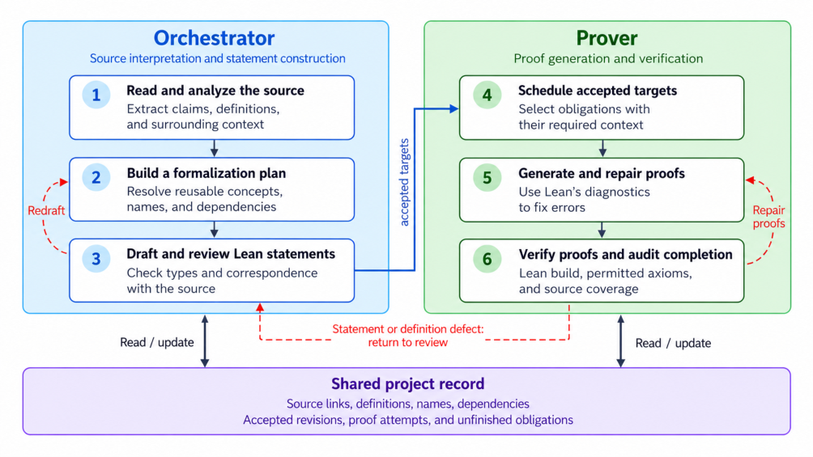
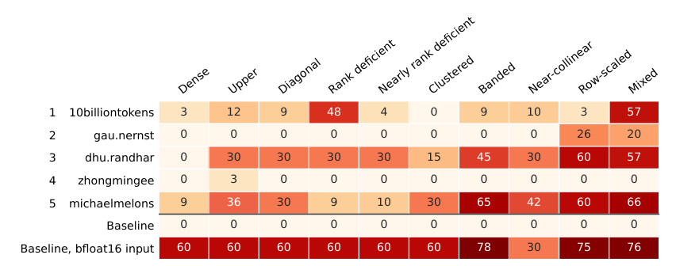

Trustworthy Numerical Software in the Age of AI: What Would Turing Do?
Kimon Fountoulakis, Maksim Melnichenko, Muhammad Fetrat Qharabagh, Georgios Alexandros Georgantzas, George Spyrou, Oleg Balabanov, Vasileios Georgiou, Riley Murray, Michael W. Mahoney
Presents VSCL, a Lean library formalizing numerical analysis (rounding-error analysis, finite-volume methods, high-dimensional probability), built by AI agents with Lean-checked proofs.
Abstract
AI coding agents can now produce numerical software faster than human experts can review it, raising serious concerns about usability and reliability. These and other AI tools are already transforming mathematics and software, and they will soon transform mathematical software. These concerns motivated us to assess AI-generated numerical linear algebra (NLA) kernels, which we did through an audit of a recent public GPU QR competition. All five leading kernels passed the competition's accuracy tests, and the winning kernel achieved a 107-fold speedup over the competition's baseline, which calls NVIDIA's QR routine. Yet each failed at least once on new inputs, even those from the competition's generator, under the same checker, while the baseline passed them all. In light of this, we want to develop reusable formalizations of numerical analysis methods, which remain sparsely represented in existing formal libraries. We describe VSCL, our Lean library of mathematical foundations for numerical computing. We also propose VERNA to connect these tasks by using formalized results to guide kernel assessment against explicit specifications. Drawing on Turing's work on rounding-error analysis and program checking, we discuss design principles for developing trustworthy numerical software when direct human checking is impractical.
Problem
AI coding agents produce numerical linear algebra kernels faster than experts can review them, and passing competition accuracy tests does not ensure reliability. Numerical analysis is also sparsely represented in formal libraries such as Mathlib.
Approach
The authors audit the five top kernels of a public GPU MODE QR competition on wider inputs from the competition's own generator, using the same checker. They describe VSCL, a Lean library formalizing material from Higham's Accuracy and Stability of Numerical Algorithms, LeVeque's finite-volume text, Vershynin's High-Dimensional Probability, and optimization sources. In its workflow, AI agents write the Lean statements and proofs, other agents review the statements against the sources, and Lean checks every proof. They also propose VERNA, which would use VSCL's formalized error bounds to test kernels against explicit specifications and issue certificates of trust.

Figure 8: The proposed orchestrator–prover workflow separates statement construction and review from proof generation. The orchestrator prepares Lean statements and arranges their review against the source before passing accepted targets to the prover. Proof errors return to repair, while errors in statements or definitions return to review. Both roles use a shared project record. Acceptance requi
Results
All five audited kernels passed the competition's 12 scored cases but failed between 3 and 357 of 1,050 audit inputs, while the baseline failed none. VSCL covers claims from all 28 Higham chapters. In the reuse analysis, 74.9% of its declarations are used by another declaration.

Figure 3: Audit failures by matrix family. Rows: the five audited entries by leaderboard rank, then the two controls. Each cell counts rejected outputs among the 105 audit inputs of a family. Data: audit record [ 99 ] .